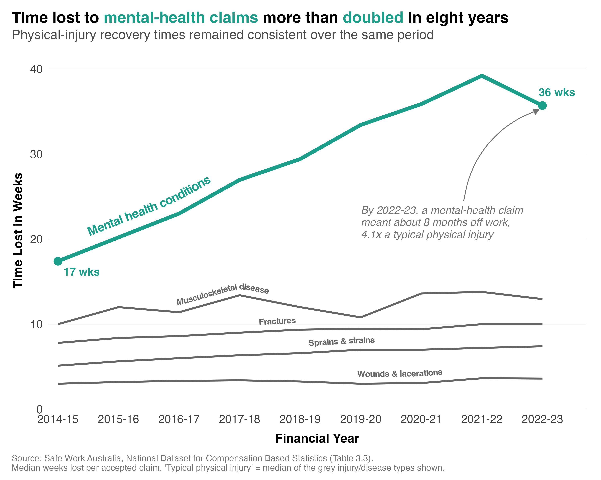

I've shared data over the last few months on the causes and economic cost of workplace mental-health claims, as well as the rising number and cost of workplace injury claims more broadly. But it's also important to consider how long people are actually off work. Time off carries costs that never show up in the claims data. A role sitting empty for months has to be covered and backfilled, and you lose the knowledge that person holds.
So what's the typical time lost to a mental-health claim, and how has it changed over time?
To answer this, I used Safe Work Australia's data on the median weeks lost per accepted workers' compensation claim. I compared mental-health conditions with four common physical injuries from 2014-15 to 2022-23 (the most recent year complete data was publicly available).
The figure below shows the median weeks lost each year. The teal line is mental-health conditions. The grey lines are the physical injuries.

Here's what I found:
1) A mental-health claim now means months off work. By 2022-23, the median time lost to a mental-health condition was about 36 weeks, or roughly eight months. A typical physical injury cost around nine weeks. That's a gap of about four to one.
2) The gap has widened. In 2014-15, the median mental-health claim cost 17 weeks. Eight years later it had more than doubled. Over the same period, recovery times for fractures, sprains, wounds and musculoskeletal disease remained fairly consistent. So the growth in return to work times is unique to psychological claims.
3) The trend may be changing in recent years. Time lost peaked at about 39 weeks in 2021-22 before easing back a little the following year. But this is only a single data point, so I'd hesitate to read too much into that until more data become available.
How heavily were these trends influenced by the COVID pandemic? The increase in time lost due to mental health claims obviously preceded the pandemic. But time lost from these claims was at its highest between 2020 and 2022, in the midst of huge disruption to how and where people worked. So it's possible that COVID exacerbated time lost. We'll learn more about this when data from more recent years becomes available.
What does this mean for practice?
A single mental-health claim can take a position out of action for the better part of a year, which is a very different cover, backfill and insurance problem than a run of short physical injuries. So it's critical to prevent incidents before they happen by managing the working conditions that create psychological harm. And when someone does become unwell, it's important to support them through their recovery, because the chance of returning to work falls the longer they're away.